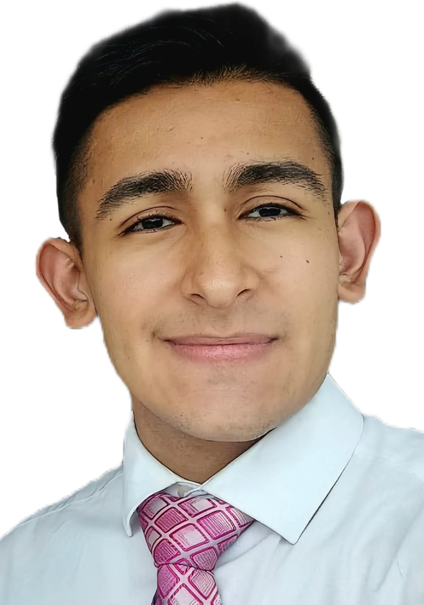

Santiago Mendoza | WDD 130
Hi, I'm Santiago Mendoza, I’m from Bogotá, Colombia, and I recently moved to Canada with my mom and sister. We now live with my mom’s husband. In my free time, I enjoy watching series while coding, which helps me relax and stay inspired. I used to work for Capital One Bank, where I gained valuable experience in the finance sector. In addition to my professional interests, I have a passion for sports, particularly basketball and volleyball. I love the teamwork and strategy involved in both games. I also enjoy playing video games, which is a great way to unwind and connect with friends. Overall, I’m excited about this new chapter in Canada and look forward to exploring new opportunities both personally and professionally.